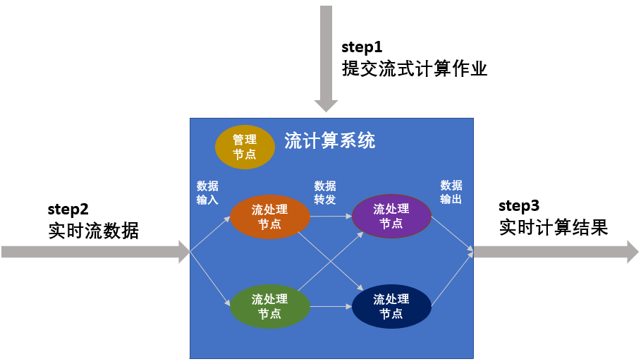
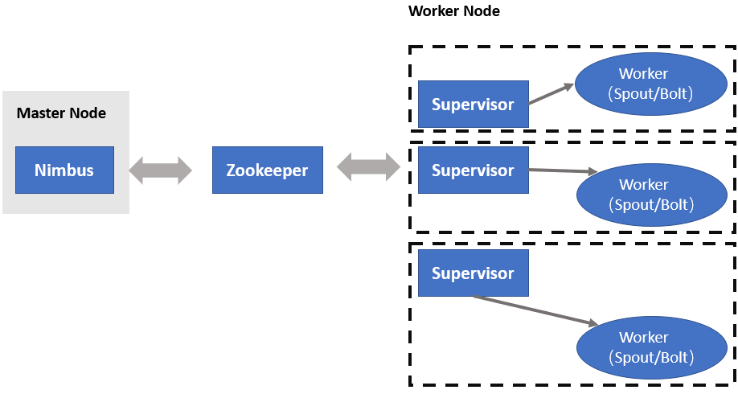
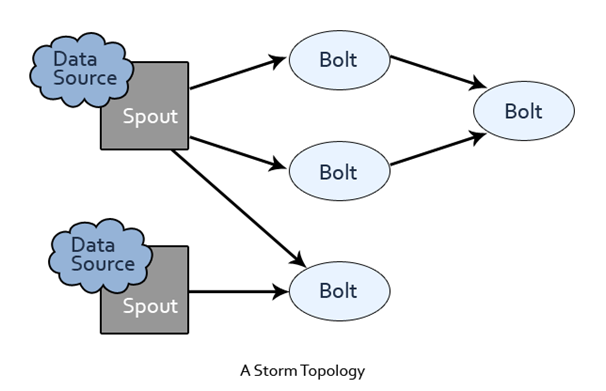
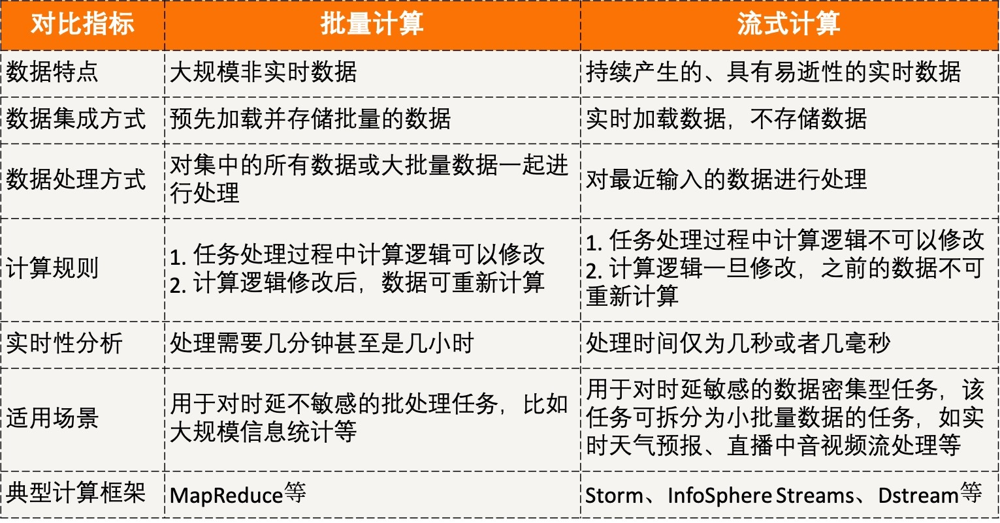
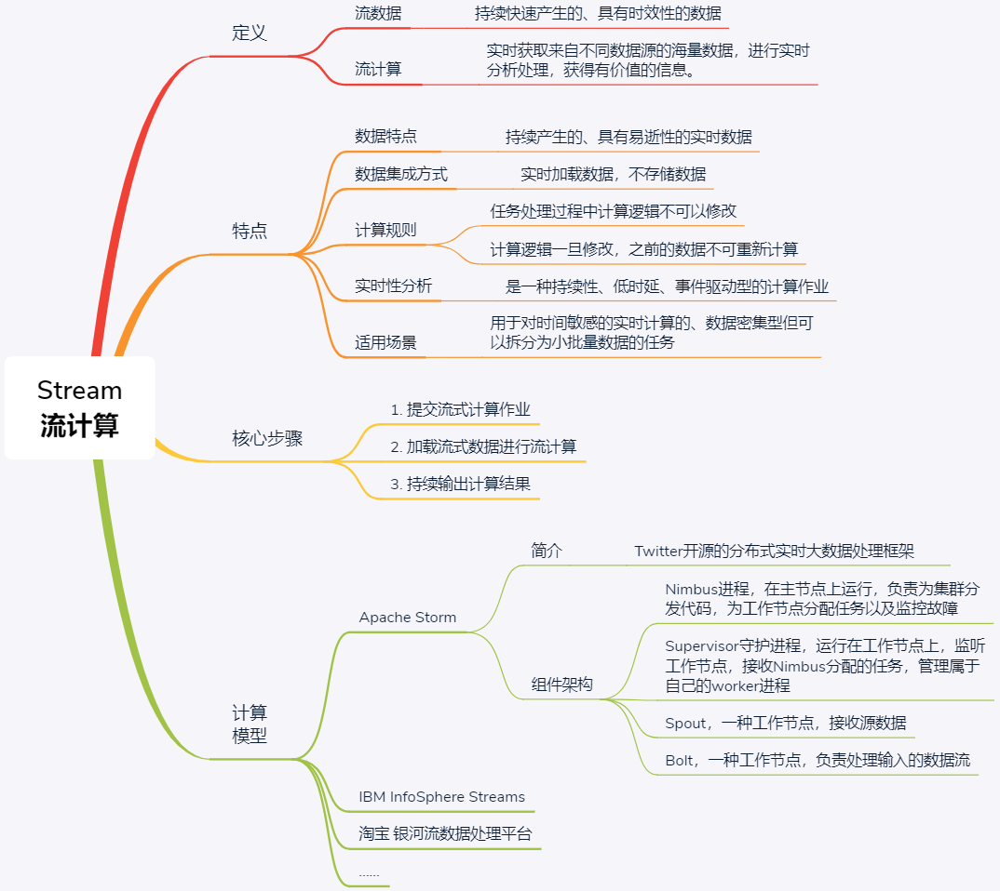

- 00 开篇词 四纵四横，带你透彻理解分布式技术.md.html
- 01 分布式缘何而起：从单兵，到游击队，到集团军.md.html
- 02 分布式系统的指标：啥是分布式的三围.md.html
- 03 分布式互斥：有你没我，有我没你.md.html
- 04 分布式选举：国不可一日无君.md.html
- 05 分布式共识：存异求同.md.html
- 06 分布式事务：All or nothing.md.html
- 07 分布式锁：关键重地，非请勿入.md.html
- 08 分布式技术是如何引爆人工智能的？.md.html
- 09 分布式体系结构之集中式结构：一人在上，万人在下.md.html
- 10 分布式体系结构之非集中式结构：众生平等.md.html
- 11 分布式调度架构之单体调度：物质文明、精神文明一手抓.md.html
- 12 分布式调度架构之两层调度：物质文明、精神文明两手抓.md.html
- 13 分布式调度架构之共享状态调度：物质文明、精神文明多手协商抓.md.html
- 14 答疑篇：分布式事务与分布式锁相关问题.md.html
- 15 分布式计算模式之MR：一门同流合污的艺术.md.html
- 16 分布式计算模式之Stream：一门背锅的艺术.md.html
- 17 分布式计算模式之Actor：一门甩锅的艺术.md.html
- 18 分布式计算模式之流水线：你方唱罢我登场.md.html
- 19 分布式通信之远程调用：我是你的千里眼.md.html
- 20 分布式通信之发布订阅：送货上门.md.html
- 21 分布式通信之消息队列：货物自取.md.html
- 22 答疑篇：分布式体系架构与分布式计算相关问题.md.html
- 23 CAP理论：这顶帽子我不想要.md.html
- 24 分布式数据存储系统之三要素：顾客、导购与货架.md.html
- 25 数据分布方式之哈希与一致性哈希：“掐指一算”与“掐指两算”的事.md.html
- 26 分布式数据复制技术：分身有术.md.html
- 27 分布式数据之缓存技术：“身手钥钱”随身带.md.html
- 28 分布式高可靠之负载均衡：不患寡，而患不均.md.html
- 29 分布式高可靠之流量控制：大禹治水，在疏不在堵.md.html
- 30 分布式高可用之故障隔离：当断不断，反受其乱.md.html
- 31 分布式高可用之故障恢复：知错能改，善莫大焉.md.html
- 32 答疑篇：如何判断并解决网络分区问题？.md.html
- 33 知识串联：以购买火车票的流程串联分布式核心技术.md.html
- 34 搭建一个分布式实验环境：纸上得来终觉浅，绝知此事要躬行.md.html
- 特别放送 Jackey：寄语天涯客，轻寒底用愁.md.html
- 特别放送 分布式下的一致性杂谈.md.html
- 特别放送 崔新：追根溯源，拨开云雾见青天.md.html
- 特别放送 徐志强：学习这件事儿，不到长城非好汉.md.html
- 特别放送 那些你不能错过的分布式系统论文.md.html
- 结束语 为什么说提升职业竞争力要从尊重、诚实开始？.md.html
- 捐赠
16 分布式计算模式之Stream：一门背锅的艺术
你好，我是聂鹏程。今天，我来继续带你打卡分布式核心技术。
在上一篇文章中，我与你介绍了分布式计算模式中的MapReduce模式。这种模式的核心思想是，将大任务拆分成多个小任务，针对这些小任务分别计算后，再合并各小任务的结果以得到大任务的计算结果。
这种模式下任务运行完成之后，整个任务进程就结束了，属于短任务模式。但，任务进程的启动和停止是一件很耗时的事儿，因此MapReduce对处理实时性的任务就不太合适了。
实时性任务主要是针对流数据的处理，对处理时延要求很高，通常需要有常驻服务进程，等待数据的随时到来随时处理，以保证低时延。处理流数据任务的计算模式，在分布式领域中叫作Stream。
今天，我将针对流数据的处理展开分享，和你一起打卡Stream这种计算模式。
什么是Stream？
近年来，由于网络监控、传感监测、AR/VR等实时性应用的兴起，一类需要处理流数据的业务发展了起来。比如各种直播平台中，我们需要处理直播产生的音视频数据流等。这种如流水般持续涌现，且需要实时处理的数据，我们称之为流数据。
总结来讲，流数据的特征主要包括以下4点：
- 数据如流水般持续、快速地到达；
- 海量数据规模，数据量可达到TB级甚至PB级；
- 对实时性要求高，随着时间流逝，数据的价值会大幅降低；
- 数据顺序无法保证，也就是说系统无法控制将要处理的数据元素的顺序。
在分布式领域中，处理流数据的计算模式，就是流计算，也叫作Stream。这个名字是不是非常形象呢？
流计算的职责是实时获取来自不同数据源的海量数据，进行实时分析处理，获得有价值的信息。
它是一个对实时性要求非常高的计算形式，如果数据处理不及时，很容易导致过时、没用的结果，这时就需要对造成的后果进行“背锅”。从这个角度来说，Stream可谓“一门背锅的艺术”。
类比于水流的持续不断且变幻莫测，流数据也是以大量、快速、时变的流形式持续在应用中产生，因此流计算一般用于处理数据密集型应用。
比如，百度、淘宝等大型网站中，每天都会产生大量的流数据，这些数据包括用户的搜索内容、用户的浏览记录等。实时采集用户数据，并通过流计算进行实时数据分析，可以了解每个时刻数据流的变化情况，甚至可以分析用户的实时浏览轨迹，从而进行个性化内容实时推荐，提高用户体验。
此外，我们常用的爱奇艺、腾讯等音视频平台，对电影、电视剧等数据的处理，也是采用了流计算模式。
那么，这种实时的流计算到底是如何运行的呢？接下来，我们就一起看看流计算的工作原理吧。
Stream工作原理
我在上一篇文章中与你介绍的MapReduce，是一种批量计算的形式。这种模式下，会先收集数据并将其缓存起来，等到缓存写满时才开始处理数据。因此，批量计算的一个缺点就是，从数据采集到得到计算结果之间经历的时间很长。
而流计算强调的是实时性，数据一旦产生就会被立即处理，当一条数据被处理完成后，会序列化存储到缓存中，然后立刻通过网络传输到下一个节点，由下一个节点继续处理，而不是像MapReduce那样，等到缓存写满才开始处理、传输。为了保证数据的实时性，在流计算中，不会存储任何数据，就像水流一样滚滚向前。
所以说，流计算属于持续性、低时延、事件驱动型的计算作业。
从这些分析中可以看出，使用流计算进行数据处理，一般包括3个步骤，如下图所示。

第一步，提交流式计算作业。流式计算作业是一种常驻计算服务，比如实时交通监测服务、实时天气预报服务等。对于流式计算作业，首先必须预先定义计算逻辑，并提交到流计算系统中，使得流计算系统知道自己该如何处理数据。
系统在整个运行期间，由于收集的是同一类型的数据、执行的是同一种服务，因此流式计算作业的处理逻辑不可更改。如果用户停止当前作业运行后再次提交作业，由于流计算不提供数据存储服务，因此之前已经计算完成的数据无法重新再次计算。
第二步，加载流式数据进行流计算。流式计算作业一旦启动将一直处于等待事件触发的状态，一旦有小批量数据进入流式数据存储，系统会立刻执行计算逻辑并迅速得到结果。
从上图中我们可以看出，在流计算系统中，有多个流处理节点，流处理节点会对数据进行预定义的处理操作，并在处理完后按照某种规则转发给后续节点继续处理。此外，流计算系统中还存在管理节点，主要负责管理处理节点以及数据的流动规则。其中，处理节点的个数以及数据转发的规则，都在第一步作业提交时定义。
第三步，持续输出计算结果。流式计算作业在得到小批量数据的计算结果后，可以立刻将结果数据写入在线/批量系统，无需等待整体数据的计算结果，以进一步做到实时计算结果的实时展现。
到这里，我们小结一下吧。流计算不提供流式数据的存储服务，数据是持续流动的，在计算完成后就会立刻丢弃。流计算适用于需要处理持续到达的流数据、对数据处理有较高实时性要求的场景。为了及时处理流数据，流计算框架必须是低延迟、可扩展、高可靠的。
流计算的应用场景有很多，比如它是网络监控、传感监测、AR/VR、音视频流等实时应用的发展的基础。所以，目前流计算相关的框架和平台也有很多了，主流的划分方式是将其分为如下3类：
- 商业级的流计算平台，比如IBM的InfoSphere Streams和TIBCO的StreamBase。InfoSphere Streams支持同时分析多种数据类型并实时执行复杂计算。StreamBase是一个用于实时分析的软件，可以快速构建分析系统，即时做出决策。StreamBase可以为投资银行、对冲基金、政府机构等提供实时数据分析服务。
- 开源流计算框架，典型代表是Apache Storm（由Twitter开源）和S4（由Yahoo开源）。Storm是一个分布式的、容错的实时计算系统，可以持续进行实时数据流处理，也可以用于分布式RPC。S4是一个通用的、分区容错的、可扩展的、可插拔的分布式流式系统。这些开源的分布式流计算系统由于具备开源代码，因此比较适合开发人员将其搭建在自身业务系统中。
- 各大公司根据自身业务特点而开发的流计算框架，比如Facebook的Puma、百度的Dstream（旨在处理有向无环的数据流）、淘宝的银河流数据处理平台（一个通用的、低延迟、高吞吐、可复用的流数据实时计算系统）。
除了这些框架外，我们还会经常听到Spark、Flink等。Spark和Flink与Storm框架的不同之处在于，Spark和Flink除了支持流计算，还支持批量计算，因此我没有直接将它们列入上述的流计算框架中。如果你的业务中需要用到或者需要参考某种计算框架或者平台的话，可以再参考其官方文档或者相关的技术文章。
接下来，我就以Storm这个开源的流计算框架为例，通过介绍Storm的工作原理，以加深你对流计算模式的进一步理解，进而帮助你将其运用到实际业务中。
Storm的工作原理
说到Storm的工作原理，我们先来对比下Storm与MapReduce的区别吧。Hadoop上运行的是“MapReduce作业”，而Storm上运行的是“计算拓扑（Topologies）”。 “作业”和“拓扑”的一个关键区别是：MapReduce 的一个作业在得到结果之后总会结束；而拓扑描述的是计算逻辑，该计算逻辑会永远在集群中运行（除非你杀死该进程）。
如下图所示，Storm集群上有两种节点，即主节点（Master Node）和工作节点（Worker Nodes）。
- Nimbus是整个Storm集群的主守护进程，以唯一实例的方式运行在主节点上。它负责把任务分配和分发给集群的工作节点，并监控这些任务的执行情况。当某个节点故障时，它会重新分配该故障节点上的任务到其它节点。
- Supervisor是Storm集群里工作守护进程，每个工作节点都存在一个这样的实例。它通过Zookeeper与Nimbus守护进程进行通信。在接受到Nimbus分配的任务后，它会为每个任务启动单独的工作进程。

前面我介绍了Nimbus是负责分发任务或代码的，Supervisor是负责接收任务，并启动和停止工作进程以执行任务的。那么Nimbus和Supervisors之间，具体是怎么协同的呢？下面我们一起看一下。
如果所有数据和信息均存储在Master Node上，Master Node故障后，会导致整个集群信息丢失，因此引入了ZooKeeper集群来加强可靠性。为此Master Node与Worker Node之间的交互通过ZooKeeper完成，由于Nimbus 和 Supervisors是Master Node和Worker Node之间负责交互的进程，因此Nimbus和Supervisors之间的所有协调都是通过ZooKeeper集群完成的，比如Nimbus会将任务的分配情况或信息发送给ZooKeeper集群，然后Supervisors向ZooKeeper集群获取任务，并启动工作进程以执行任务。
当Supervisor接收到分配的任务后，会启动工作节点的工作进程(Worker)去执行任务。我们知道，一个计算任务可以分成任务数据的读取以及任务执行两部分。Worker提供了两个组件Spout和Bolt，分别进行数据读取和任务执行。
在详细介绍Worker组件之前，我首先介绍一下Storm的核心抽象：数据流。数据流是一个无界序列，是在分布式环境中并行创建、处理的一组元组（tuple）。数据流可以由一种能够表述数据流中元组的域（fields）的模式来定义。
Storm为进行数据流转换提供了基本组件Spout和Bolt。 Spout和Bolt有用户自定义的接口，用于运行特定应用程序的逻辑。如下图所示，Storm上运行的计算拓扑其实是由一系列Spout 和 Bolt 组成的有向无环图，这个有向无环图代表了计算逻辑。

备注：
- 图中箭头，表示数据元组的传递方向。
- 此图引自“Twitter Analysis with Apache Storm”。
接下来，我们看看Spout和Bolt的含义吧。
- Spout用于接收源数据。通常情况下，Spout 会从一个外部的数据源读取数据元组，然后将它们发送到拓扑中。例如，Spout从Twitter API读取推文并将其发布到拓扑中。
- Bolt负责处理输入的数据流，比如数据过滤（filtering）、函数处理（functions）、聚合（aggregations）、联结（joins）、数据库交互等。数据处理后可能输出新的流作为下一个Bolt的输入。每个Bolt往往只具备单一的计算逻辑。当我们执行简单的数据流转换时，比如仅进行数据过滤，则通常一个 Bolt 可以实现；而复杂的数据流转换通常需要使用多个 Bolt 并通过多个步骤完成，比如在神经网络中，对原始数据进行特征转换，需要经过数据过滤、清洗、聚类、正则化等操作。
知识扩展：流计算和批量计算的区别是什么？
MapReduce可以说是一种批量计算，与我们今天介绍的用于实时数据处理的流计算，是什么关系呢？
虽然流计算和批量计算属于两种不同的计算模式，但并不是非此即彼的关系，只是适用于不同的计算场景。
在流计算中，数据具有时效性，因此在5G以及人工智能应用的驱动下，专注于实时处理的流计算越来越得到广泛的关注。流计算的低延时、易扩展等性能非常适用于对时延要求高的终端应用（比如直播中音视频的处理等），从而极大提高用户的服务体验。而批量计算适用于对时延要求低的任务。
在实际运用中，可以根据计算要求，选择不同的计算模式。我将这两种计算模式的特点，总结为了一张表格，以帮助你理解、记忆，以及选择适合自己业务场景的计算模式。

总结
今天，我与你介绍了分布式计算模式中的流计算。流数据的价值会随时间的流逝而降低，“时间就是金钱”在流计算中体现得淋漓尽致。这就要求流计算框架必须是低延迟、可扩展、高可靠的。
在介绍流计算的工作原理时，我首先通过一个流程图，与你介绍了它的3个步骤，即提交流式计算作业、加载流式数据进行流计算和持续输出计算结果。
然后，我以流计算开源框架中的Storm为例，与你讲述了Storm的核心组件以及通过Spout和Bolt构建有向无环图代表流计算逻辑，以实现流计算，以加深你对流计算原理的理解。
最后，我再通过一张思维导图来归纳一下今天的核心知识点吧。

思考题
离线计算和批量计算，实时计算和流式计算是等价的吗？你能和我说说你做出判断的原因吗？
我是聂鹏程，感谢你的收听，欢迎你在评论区给我留言分享你的观点，也欢迎你把这篇文章分享给更多的朋友一起阅读。我们下期再会！
© 2019 - 2023 Liangliang Lee. Powered by gin and hexo-theme-book.